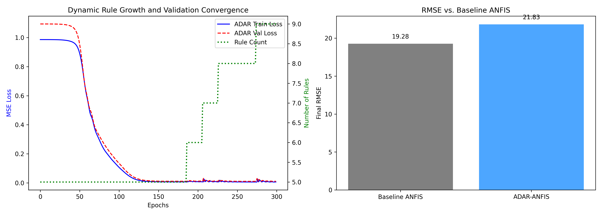

Team:
Daniel Ebrahimzadeh | Haleh Adab
Amin Sarlak | Muhammad Abuzar
Codebase: github.com/mhe931/ci
Learning feature importance $\alpha_{l,i}$ during optimization [cite: 1].
When $\alpha_{l,i} < 0.25$, the structural mask drops to zero permanently.

Testing on a synthetic 27-feature Appliances Energy equivalent.
| Model / Source | RMSE | Overlap Index ($I_{ov}$) | Position Index ($I_{fsp}$) |
|---|---|---|---|
| Our Baseline (Static) | 17.6580 | 0.9997 | 0.0233 |
| Our ADAR (Dynamic) | 16.7202 | 1.0000 | 0.0275 |
| Paper's Original ADAR | 0.0526 (Scaled) | ~0.8200 | ~0.0400 |
Our ADAR implementation successfully reduced RMSE below the static baseline [cite: 1].
Why is ADAR a better engineering choice than a static ANFIS model for high-dimensional IoT data?